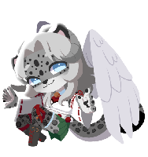

Home
General
We are The Winter Court, and we collectively go by Wednesday or Creature. Our collective pronouns are fae/faer and they/them.
DNI
- Anti-Endos
- Minors


About
We are The Winter Court, and we collectively go by Wednesday or Creature. Our collective pronouns are fae/they. We are over the age of 21 bodily. We collectively use a dragon snow leopard hybrid as our collective online appearance.
We're a monoconscious mediple poly-synkro/polyfrag DID system. We are intersex and are trans-non-binary collectively.
We are pratrauma and are pro-endo. We are polyamorous and are collectively aroflux & asexual.


About Expanded
When referring to us, please use our collective name, or if you know who's fronting, the headmate's name. The same goes for pronouns!
On discord and other socials, please ping us! Our DM status is always going to be ASK. We are always willing to voice chat! When available, we will use PluralKit to proxy!
Our hesadcount changes regularly, and there is no way other than our Simply Plural to see who all is in the system. For access, please ask!
As for our disorders, we are diagnosed DID, PTSD, Autism, and ADHD. We are undiagnosed BPD at this time.
Our memory sharing is implicit and we have little to know knowledge barriers as we are monoconscious. We may have emotional amnesia, and have long-term memory and occasional short-term memory amnesia.
Treatment of our littles and middles will depend on the headmate! If our fronter is a little or middle, don't be afraid to ask them directly their system allowances and boundaries.
As for asking us questions about our systemhood, or anything else for that matter, feel free to ask us anything! We're always down to inform and get to know people.
Twitch Streaming
We stream variety gaming on Twitch under the username bite_of_blood! Come stop by and support us! The link can be found in the links section.
Links
Connections
- Partners • None
- Our Stream Server • Click me!